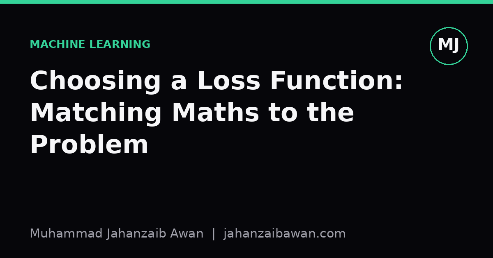

Choosing a Loss Function: Matching Maths to the Problem
A loss function is not a formality bolted onto a model; it is a statement of what kind of mistake you actually care about. Get that statement wrong and everything downstream suffers.

The loss function is a promise, not a default
When I set up a training run, the loss function is the one place where I am forced to write down, in maths, what I actually think a mistake costs. It is easy to treat it as boilerplate: regression gets mean squared error, classification gets cross entropy, and you move on to the interesting part. But the loss is not a formality. It is the objective the optimiser will chase relentlessly, and it will find every shortcut the maths allows. If the loss does not reflect the real-world cost of being wrong, the model will happily be wrong in the cheap way rather than the useful way.
This matters because different losses encode different beliefs about errors. Mean squared error believes that a error twice as large is four times as bad. Mean absolute error believes it is only twice as bad. Cross entropy believes that being confidently wrong is catastrophic, while being vaguely wrong is merely disappointing. None of these beliefs are universally correct. They are modelling choices, and the right one depends entirely on what happens downstream when the prediction misses.
I think the most common failure I see, in my own early work and in others', is choosing the loss that the library defaults to rather than the one that matches the domain. It runs, the numbers go down, and that feels like progress. But a falling loss curve only tells you the model is getting better at the thing you told it to minimise, not the thing you actually wanted.
A worked example: predicting delivery times
Suppose you are predicting delivery times in minutes, and the business consequence of being late is a refund, while being early just means the customer waits a bit. Say the true delivery time is 30 minutes. Consider two predictions: one at 20 minutes, an error of minus 10, and one at 45 minutes, an error of plus 15.
Under mean squared error, the first error contributes 100 and the second contributes 225. The optimiser will work harder to shrink the 45-minute prediction because squaring punishes large errors disproportionately. That sounds reasonable until you realise MSE treats an error of plus 15 and minus 15 identically, yet in this business, being 15 minutes early costs nothing while being 15 minutes late costs a refund. MSE is symmetric; the business is not.
A more honest loss here is an asymmetric one: penalise late predictions more heavily than early ones, perhaps by weighting positive errors, actual minus predicted, three times more than negative ones. With that weighting, the plus 15 error now contributes far more to the loss than it would under plain MSE, and the model is pushed to predict times that err on the side of lateness protection rather than raw statistical accuracy. The mean absolute error would have been closer to this intuition than MSE, since it does not amplify large errors quadratically, but it still would not capture the asymmetry. The lesson is not that MSE or MAE are wrong in general; it is that neither was designed with your refund policy in mind, and only you know that policy.
Classification: cross entropy is not neutral either
The same logic applies to classification, where cross entropy is the default almost everywhere, and for good statistical reasons: it is the maximum likelihood loss under a Bernoulli or categorical assumption, it produces well calibrated probabilities when the model has enough capacity, and its gradients behave sensibly. But it silently assumes that every class matters equally and that false positives and false negatives cost the same. In fraud detection, medical screening, or rare-event forecasting, that assumption is almost never true.
Take a screening task where the positive class occurs in 2 in 100 cases. A model that predicts negative for everything achieves 98 percent accuracy and a deceptively low average cross entropy loss, because the loss is dominated by the 98 easy negatives it gets right. The 2 positives it misses barely move the average. If missing a positive case is far more costly than a false alarm, the raw cross entropy loss is actively hiding the failure that matters most.
Weighted cross entropy, where the minority class's errors are multiplied by a larger factor, say 20 instead of 1, forces the optimiser to pay attention to those 2 cases in every 100. Alternatively, focal loss down-weights the easy, already-confident negatives and concentrates gradient signal on the hard, ambiguous examples, which tends to help when the imbalance is severe and the easy majority class would otherwise dominate training. Neither fix changes the underlying maths of cross entropy; both change what the loss considers worth learning from, which is exactly the point.
It is worth being honest that these fixes come with trade-offs. Aggressive reweighting can push a model towards over-predicting the rare class, trading missed positives for a flood of false alarms, so the weighting factor itself becomes a decision that should be justified by the actual cost ratio in the deployment setting, not chosen because it made a validation metric look better.
The practical takeaway
Before picking a loss, I try to answer one question honestly: if the model is wrong, what actually happens next, and does that consequence scale linearly, quadratically, or asymmetrically with the size or type of the error? A quadratic loss like MSE is right when large errors genuinely cause disproportionate harm, such as in control systems where overshoot compounds. An absolute loss is right when consistency matters more than occasional big misses. A weighted or asymmetric loss is right whenever the cost of one type of error clearly outweighs another, which in my experience is most of the time in real deployed systems, not the rare exception.
The other habit worth building is separating the training loss from the metric you report and trust for decisions. It is entirely reasonable to train with a smooth, differentiable proxy like cross entropy while evaluating and reporting with something closer to the true business cost, such as a weighted F-score or an expected cost calculation over a confusion matrix. The loss drives learning; the evaluation metric tells you the truth. Confusing the two, or assuming the default loss is also the right yardstick, is where a lot of quietly broken models come from.